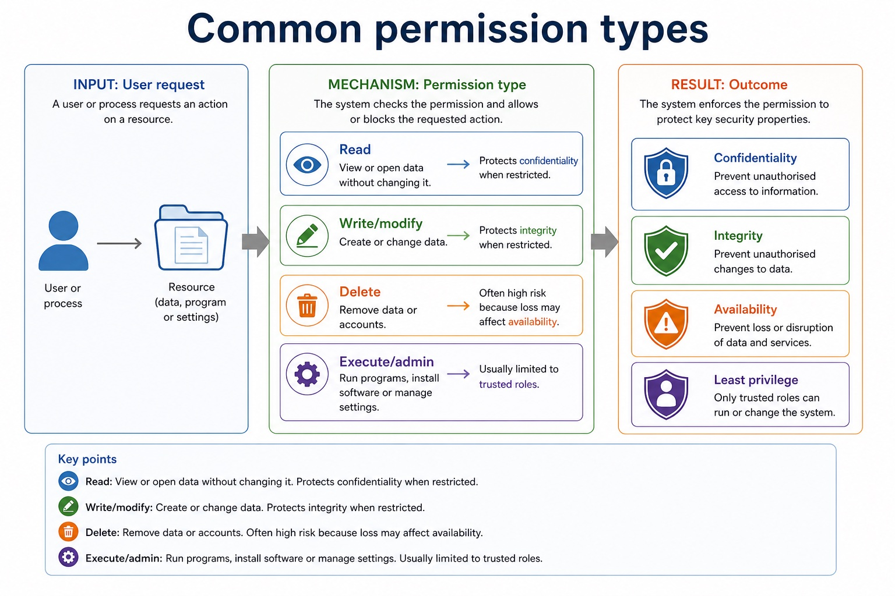
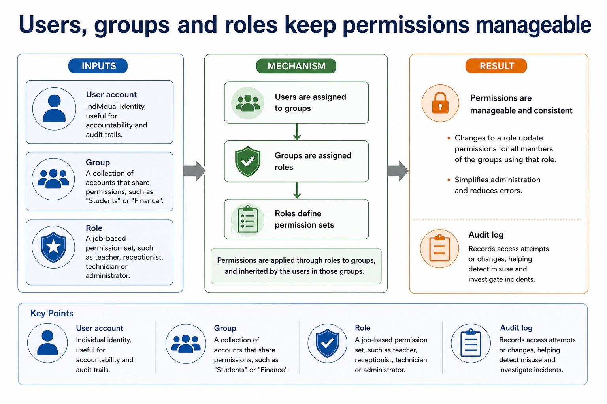
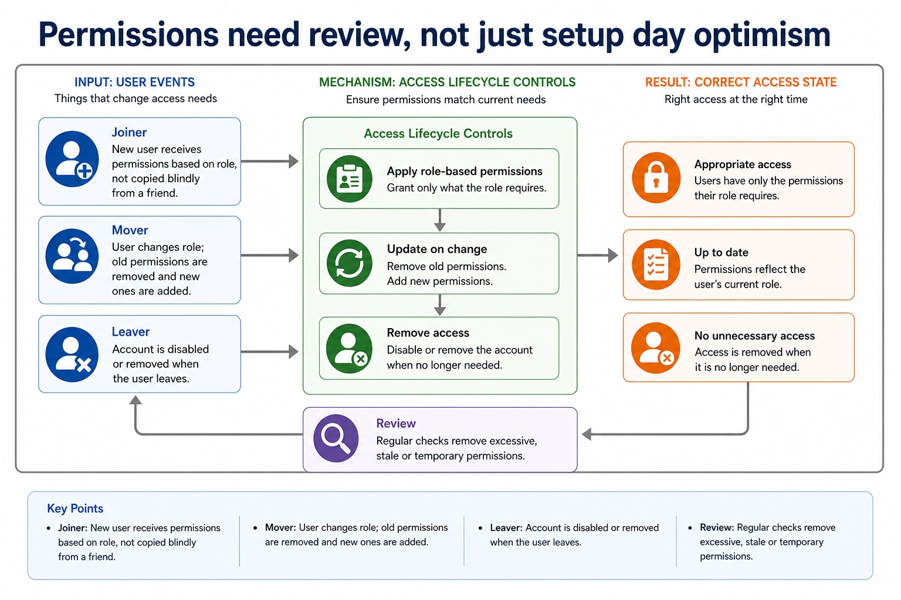

Access rights and encryption as data-security methods
Access rights restrict authorised actions on resources. Read permission controls viewing; write/modify controls alteration; delete controls removal; execute or administrative rights control running software or changing system settings. Least privilege grants only the permissions needed for a role and removes temporary rights when no longer required.
Encryption transforms plaintext into ciphertext using an algorithm and key. Without the correct decryption key, intercepted or stolen ciphertext should not reveal readable content. Encryption therefore protects confidentiality, while access rights can protect confidentiality and integrity by preventing unauthorised viewing or alteration.
The methods do different jobs: encryption does not decide which logged-in user may edit a record, and access rights do not make a stolen unencrypted copy unreadable. Neither method guarantees availability, data truth or protection after an authorised account is misused.
Worked example: Protect a payroll file
The payroll file is encrypted at rest so a stolen storage device does not reveal readable salaries without the key. The payroll application grants read/write rights only to payroll staff and read-only rights to an auditor. A compromised ordinary account cannot open the file through the application, while an attacker who steals only the encrypted file still lacks readable plaintext.
One control can support more than one goal, but not every goal
One control can support more than one goal, but not every goal: source-grounded visual explanation.
Lesson fact: Encryption makes data unreadable without the correct key and supports confidentiality.
Lesson fact: Access rights prevent unauthorised viewing and prevent unauthorised alteration; they support confidentiality and integrity but do not detect whether data changed.
Lesson fact: Backups allow recovery after data loss or corruption and support availability.
Lesson fact: Hash/checksum comparison can detect whether data changed and supports integrity, but it does not prevent unauthorised alteration.
Core syllabus practice
Access rights and encryption as data-security methods: apply and assess
Targeted practice
1. How do access rights protect confidentiality?
Show answer
They prevent users without read permission from viewing the data.
2. How do access rights protect integrity?
Show answer
They prevent users without write/delete permission from altering or removing the data.
3. How does encryption protect data?
Show answer
It converts plaintext to ciphertext that is unreadable without the correct key.
4. Why are both methods useful?
Show answer
Access rights govern permitted actions in the system; encryption protects the content of an intercepted or stolen copy.
Exam-style question
6 marks
Explain how access rights and encryption protect a payroll file, and state one limitation of each method.
Show MS
Answer
Guidance
Marks
access rights restrict viewing to users/roles with read permission
Do not claim that access rights detect changes, that encryption guarantees integrity, or that either method replaces the other.
1
access rights restrict modification/deletion to permitted users/roles
1
encryption converts plaintext to ciphertext using a key
1
without the correct key the stolen/intercepted data is not readable
1
access-rights limitation developed
1
encryption limitation developed
1
Lesson 066 | 45 minutes | Paper 1 Section 6 | Security, privacy and data integrity
Logging in proves who you are. Permissions decide what you can touch.
Access rights define what an authenticated user can read, write, delete, execute or administer.
Least privilege means users receive only the permissions needed for their role. It is the opposite
of giving everyone the digital master key and hoping nobody presses the shiny red button.
Defineaccess rights, permissions, roles and least privilege
Applypermission matrices to realistic files, databases and accounts
Justifyhow limiting permissions protects confidentiality and integrity
Authenticate -> identify userAuthorise -> check permissionAllow only needed actionsLog and review access
A correct login is not a permission slip for everything.
Why this matters
Good exam answers connect a permission to a protected security goal, not just to the word "secure".
Common error
Authentication is not the same as authorisation. Being known by the system does not mean being allowed to edit everything.
Warm-up hook
A student can log into the school system but cannot edit exam grades. What control is this?
The system recognises the student. It just does not hand over the gradebook and a confetti cannon.
Choose one. Focus on the action the user is allowed or denied.
Knowledge point 1
Access control decides what authenticated users may do
Access rightA permission to perform an action on a resource, such as read or write.ResourceA file, database table, account, device, folder, application or network service.AuthorisationThe decision to allow or deny an action after identity has been checked.PolicyThe rule set that maps users, groups or roles to permitted actions.
Chinese support: access rights = 访问权限；permission = 权限；least privilege = 最小权限原则；authorisation = 授权。
Access control decides what authenticated users may do
Access control decides what authenticated users may do: source-grounded visual explanation.
Lesson fact: Access right A permission to perform an action on a resource, such as read or write.
Lesson fact: Resource A file, database table, account, device, folder, application or network service.
Lesson fact: Authorisation The decision to allow or deny an action after identity has been checked.
Lesson fact: Policy The rule set that maps users, groups or roles to permitted actions.
Knowledge point 2
Common permission types
ReadView or open data without changing it. Protects confidentiality when restricted.Write/modifyCreate or change data. Protects integrity when restricted.DeleteRemove data or accounts. Often high risk because loss may affect availability.Execute/adminRun programs, install software or manage settings. Usually limited to trusted roles.
Common permission types

Common permission types: source-grounded visual explanation.
Lesson fact: Read View or open data without changing it. Protects confidentiality when restricted.
Lesson fact: Write/modify Create or change data. Protects integrity when restricted.
Lesson fact: Delete Remove data or accounts. Often high risk because loss may affect availability.
Lesson fact: Execute/admin Run programs, install software or manage settings. Usually limited to trusted roles.
Knowledge point 3
Users, groups and roles keep permissions manageable
User accountIndividual identity, useful for accountability and audit trails.GroupA collection of accounts that share permissions, such as "Students" or "Finance".RoleA job-based permission set, such as teacher, receptionist, technician or administrator.Audit logRecords access attempts or changes, helping detect misuse and investigate incidents.
Users, groups and roles keep permissions manageable

Users, groups and roles keep permissions manageable: source-grounded visual explanation.
Lesson fact: User account Individual identity, useful for accountability and audit trails.
Lesson fact: Group A collection of accounts that share permissions, such as "Students" or "Finance".
Lesson fact: Role A job-based permission set, such as teacher, receptionist, technician or administrator.
Lesson fact: Audit log Records access attempts or changes, helping detect misuse and investigate incidents.
Knowledge point 4
A permission matrix makes access decisions visible
Role
Student records
Exam marks
System settings
Student
Read own record
No access
No access
Teacher
Read class records
Write marks for own classes
No access
Exam officer
Read relevant records
Read/write exam data
No access
Administrator
Manage accounts
Access only if required
Change settings
A permission matrix makes access decisions visible
A permission matrix makes access decisions visible: source-grounded visual explanation.
Lesson fact: Student records
Lesson fact: Exam marks
Lesson fact: System settings
Lesson fact: Read own record
Lesson fact: No access
Lesson fact: Read class records
Lesson fact: Write marks for own classes
Lesson fact: Exam officer
Lesson fact: Read relevant records
Lesson fact: Read/write exam data
Lesson fact: Administrator
Lesson fact: Manage accounts
Knowledge point 5
Least privilege reduces unnecessary damage
DefinitionGive users only the minimum permissions needed to perform their role.ConfidentialityUsers cannot view data that is not needed for their work.IntegrityUsers cannot accidentally or deliberately change data outside their responsibility.AvailabilityFewer users can delete files, disable services or change critical settings.
Least privilege reduces unnecessary damage
Least privilege reduces unnecessary damage: source-grounded visual explanation.
Lesson fact: Definition Give users only the minimum permissions needed to perform their role.
Lesson fact: Confidentiality Users cannot view data that is not needed for their work.
Lesson fact: Integrity Users cannot accidentally or deliberately change data outside their responsibility.
Lesson fact: Availability Fewer users can delete files, disable services or change critical settings.
Knowledge point 6
Permissions need review, not just setup day optimism
JoinerNew user receives permissions based on role, not copied blindly from a friend.MoverUser changes role; old permissions are removed and new ones are added.LeaverAccount is disabled or removed when the user leaves.ReviewRegular checks remove excessive, stale or temporary permissions.
Permissions need review, not just setup day optimism

Permissions need review, not just setup day optimism: source-grounded visual explanation.
Lesson fact: Joiner New user receives permissions based on role, not copied blindly from a friend.
Lesson fact: Mover User changes role; old permissions are removed and new ones are added.
Lesson fact: Leaver Account is disabled or removed when the user leaves.
Lesson fact: Review Regular checks remove excessive, stale or temporary permissions.
Interactive decision tool
Should the action be allowed?
Select a scenario and compare the decision with the reason and common error.
Worked examples
Four model answers using role, action and consequence
Practice with instant checking
Short answers: permission, role, reason
Type a concise answer. Use the local answer button if you need a model response.
Mistake debugging
Fix the sentence before it loses marks
Exam-style questions
Original Cambridge-style questions with expandable MS
Answer first. Then open the mark scheme and compare wording strictly.
Summary
Permissions are practical security rules
Access rightsDefine permitted actions on resources.
Roles/groupsMake permissions consistent and easier to manage.
Least privilegeLimits unnecessary access and reduces damage.
Homework
Homework tasks
Task 1: Permission matrixCreate a 4-role permission matrix for a hospital system: patient, doctor, receptionist and administrator. Use read, write, delete and no access.Task 2: Least privilege explanationWrite two paragraphs explaining how least privilege protects confidentiality and integrity in a school database.Task 3: 6-mark answerAnswer: "A temporary worker needs access for one week. Explain how access rights should be managed and why." Include review/removal.